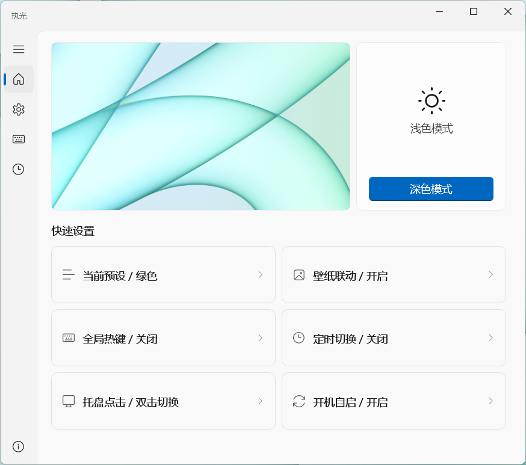
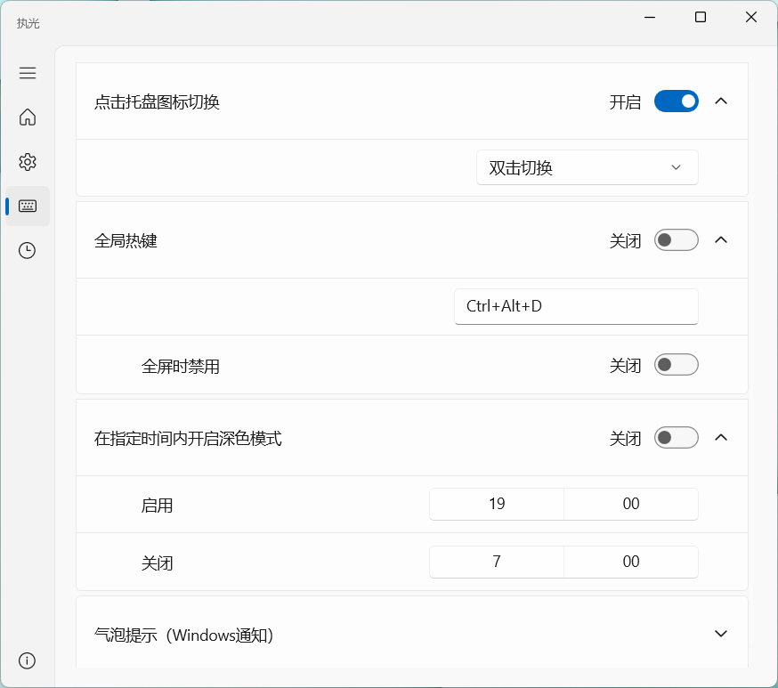
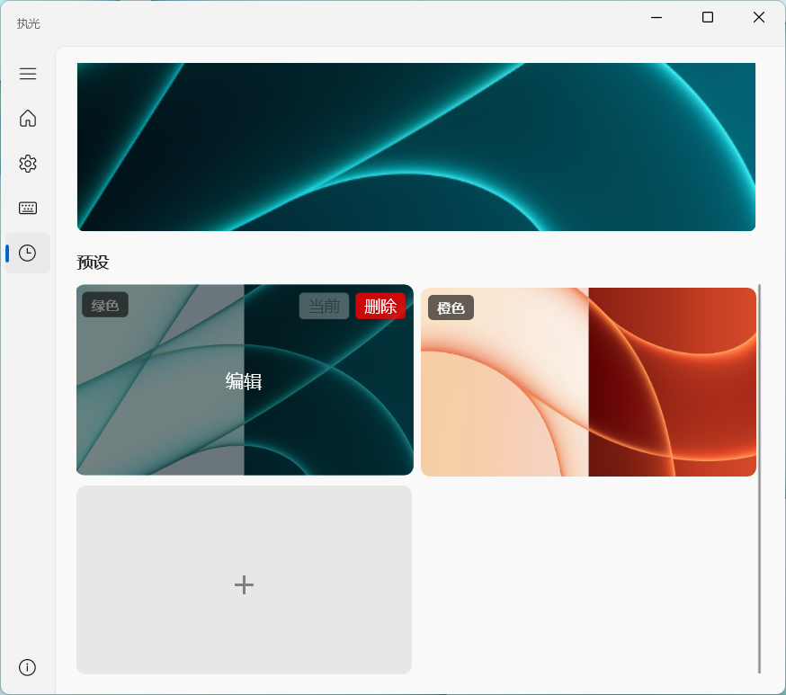
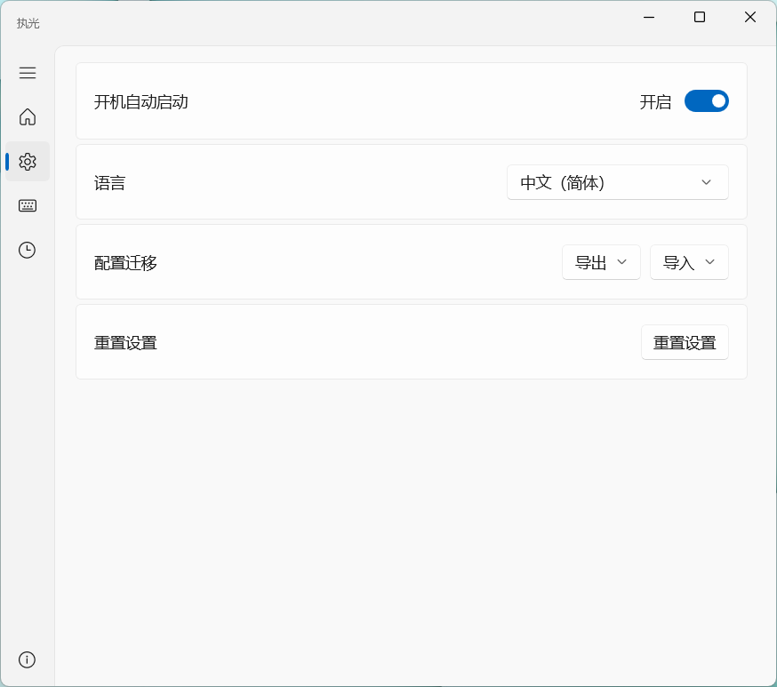

✨ 基于 WinUI 3 打造的纯粹体验
执光
优雅、无感、极速的 Windows 深浅主题自动切换工具。
完美接管系统外观与壁纸，让白昼与黑夜的过渡成为一种极致的视觉享受。
Experience
昼夜交替，仅在指尖。
右下角的那个小圆点，就是你的全局开关。
轻轻一点，系统主题与桌面壁纸瞬间重塑，不留一丝迟滞。
Dashboard
全局状态，一览无余。
拒绝繁琐的层级。核心预设、触发机制与壁纸联动状态都在主页集中呈现。用最短的路径，完成最关键的配置。

Triggers
适应你的运行法则。
规则由你制定。无论是基于时间线的自动流转，还是快捷键的精准触发，Tenlux 都能以你最舒服的方式运作。

Wallpaper
表里如一的沉浸感。
告别突兀的视觉断层。接管深浅模式下的独立壁纸，每一次模式切换，桌面环境都随之完美过渡。

Preferences
强大，却克制。
开机自启、配置迁移、多语言支持。所有底层支撑能力都被妥帖安置，为你提供最稳固的后盾。

Lightweight
隐如空气，了无痕迹。
窗口一旦关闭，立刻释放所有非必要 UI 资源。常驻后台的，仅仅是一个性能占用微乎其微的守护核心。
0MB
Background RAM
0MB
Package Size (w/ .NET)
0%
Idle CPU
WinUI 3
Native UI